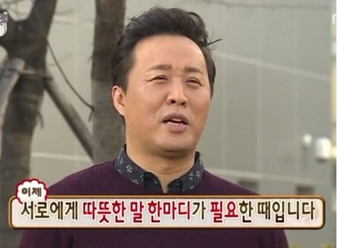

✏️역사는 잘 봤고 수학은 아니...
이번 중간고사는 특이하게 두 과목만 봤답니다.
중학생들 역사랑 수학만 배워??
그건 아니에요. 자세한 건 모르지만 일이 그렇게 됐다...
나머지 과목은 수행평가로 대체하겠죠?
아무튼 방학 때 여러 과목을 예습한 정인이와 학교 친구들은 허무할 수도...
그래도 두 과목만 본다니...!!시험 공부에 대한 압박이 적어져서 기뻤을텐데요.
그런데 문제가 뭐야?😅
정인이는 국어 과목이 가장 강하대요. 수학 앞에선 자신감이 약해지고요.

정인이 표정을 보니 어두컴컴.
이유를 물어보니 수학 답안을 밀려썼대요.
이를 어째ㅠㅠㅠ
큰 실수를 저질렀네요.
그래도 중학교 2학년이니...크게 문제될 건 없겠죠? 인생 살면서 실수 한 번은 누구나 하니까요.
다들 한 마디씩 해주세요. "괜찮아~~"라고요🤗
